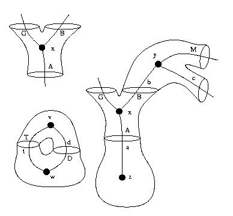

| Curious archaeological jpg from the early eons of Moleculizer. |  |
Simulating Cellular Reaction Networks with Moleculizer 1.0 -- Moleculizer for biologists. (PDF).
Input file formats
Moleculizer - Simulator and reaction network generator for cell biology.
Cptzr - Compartmental version of Moleculizer.
Odie - Reaction network simulator using ordinary differential equations.
Rk4tau - Tau-leaping-based stochastic reaction network simulator.